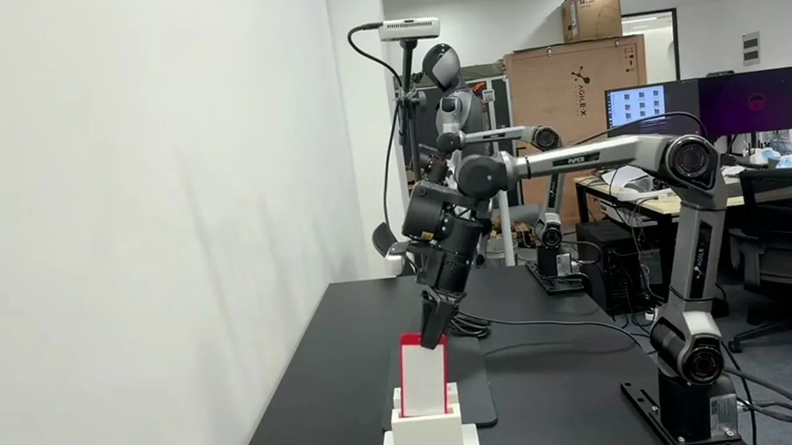

π0.6 RECAP 真机自改进（松灵 PiperX 单臂）
独立负责。在松灵 PiperX 单臂平台复现并落地 π0.6（RECAP）自改进方案，以手机插拔精细操作为标杆任务，让策略在真机部署中通过自主 rollout 与专家干预纠错持续从经验中学习，逐步超越示教水平。
- 完成机械臂、夹爪、多路相机联调与遥操作示教链路，采集并清洗 200 条 demonstration 作为冷启动数据。
- 复现 RECAP 流程：offline RL 预训练并引入 advantage conditioning，融合示教、自主采集与专家干预三类异构数据。
- 部署后采集 autonomous rollout、记录失败并注入人工纠正，微调 value function 优化 advantage 估计；动作分块 + 异步推理降低执行延迟，完成多轮真机自我改进迭代。

π0.6
RECAP
Advantage Conditioning
Offline RL
Action Chunking
异步推理
≈2×
标杆任务吞吐
≈−50%
标杆任务失败率